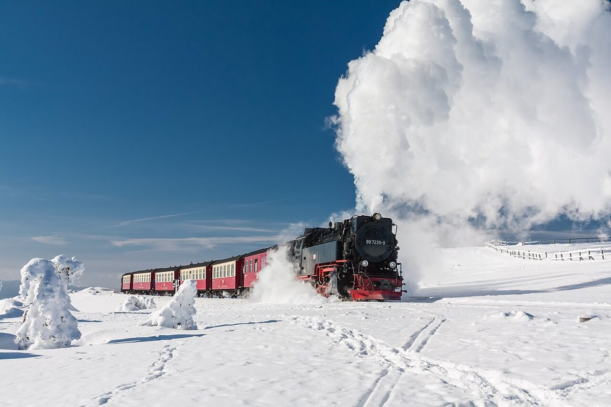

Der Brocken im Harz – Ein magisches Bergabenteuer

Der Brocken, der höchste Berg des Harzgebirges, ist ein Ort voller Mystik und Naturwunder. Mit 1.141 Metern ragt er majestätisch über die Landschaft und ist ein Muss für jeden Naturliebhaber und Wanderfreund. Ob du dich für die faszinierende Geschichte, die artenreiche Flora und Fauna oder die atemberaubenden Ausblicke interessierst – der Brocken hat für jeden etwas zu bieten.
Anreise zum Brocken
Der Brocken ist sowohl mit dem Auto als auch mit öffentlichen Verkehrsmitteln gut erreichbar. Wer mit dem Zug anreist, kann die Harzer Schmalspurbahn nutzen, die von Wernigerode, Quedlinburg oder Nordhausen aus zum Gipfel führt. Diese historische Dampfbahn ist selbst ein Erlebnis und bietet eine entspannte Anreise. Wer lieber mit dem Auto unterwegs ist, kann nach Schierke fahren, einen der Ausgangspunkte für Wanderungen zum Brocken. Parkmöglichkeiten sind vorhanden, allerdings kann es in der Hochsaison voll werden.
Beste Reisezeit
Der Brocken ist zu jeder Jahreszeit ein besonderes Erlebnis. Im Frühling und Sommer erwacht die Natur, und du kannst die vielfältige Pflanzenwelt bewundern. Der Herbst verzaubert mit goldenen Wäldern und klarer Luft, während der Winter eine mystische Atmosphäre schafft, besonders wenn der Berg unter einer Schneedecke liegt. Wichtig: Das Wetter auf dem Brocken kann schnell wechseln, selbst im Sommer. Pack also immer wetterfeste Kleidung ein!
Highlights auf dem Brocken
1. Der Brockengipfel: Der Gipfel bietet nicht nur einen großartigen Rundumblick, sondern ist auch Standort des Brockenhauses. Hier erfährst du mehr über die Geschichte des Bergs und die Besonderheiten des Nationalparks Harz.
2. Wanderungen: Es gibt zahlreiche Wanderwege zum Brocken, wie den populären Goetheweg oder den Heinrich-Heine-Weg. Diese Routen sind gut ausgeschildert und bieten malerische Ausblicke.
3. Die Brockenbahn: Eine Fahrt mit der historischen Dampfbahn ist ein Highlight für sich. Sie bringt dich bequem auf den Gipfel und ermöglicht dir, die Landschaft zu genießen, ohne müde zu werden.
4. Die Flora und Fauna: Der Brocken ist Teil des Nationalparks Harz und beherbergt eine einzigartige Tier- und Pflanzenwelt. Mit etwas Glück siehst du sogar einen Luchs oder eine Kreuzotter.
5. Die Brockensage: Der Berg ist Schauplatz zahlreicher Sagen und Mythen, die von Hexen und mystischen Wesen erzählen. Besonders zur Walpurgisnacht ist der Brocken ein Ort voller Magie.
Kulinarische Empfehlungen
Nach einer ausgiebigen Wanderung oder einer Fahrt mit der Brockenbahn solltest du dir eine Stärkung gönnen. Auf dem Gipfel gibt es ein Restaurant, das regionale Spezialitäten anbietet. Probier unbedingt die Harzer Schmarrn, eine süße Pfannkuchenspezialität, oder eine herzhafte Brockenforelle. In den umliegenden Orten wie Wernigerode oder Schierke findest du ebenfalls gemütliche Gaststätten, die typisch deutsche Küche servieren.
Fazit
Der Brocken ist ein Ort, der Naturliebhaber, Geschichtsinteressierte und Abenteurer gleichermaßen begeistert. Mit seiner beeindruckenden Höhe, den vielfältigen Wanderwegen und der reichen Kulturgeschichte ist er das perfekte Ziel für einen Tagesausflug oder einen längeren Aufenthalt im Harz. Plane deinen Besuch gut, achte auf das Wetter und lass dich von der Magie dieses besonderen Berges verzaubern!
Haiktec
- Zauberhafte Abenteuer im Schlummerland: 7 neue Gute-Nacht-Geschichten für kleine Träumer (3-8 Jahre)
- Umzugsbudget-Tracker & Renovierungskosten-Rechner
- 7 Schritte zum erfolgreichen Gemüsegarten für Selbstversorger: Einfache Anleitung für Anfänger
Text mit KI erstellt und automatisch geprueft.